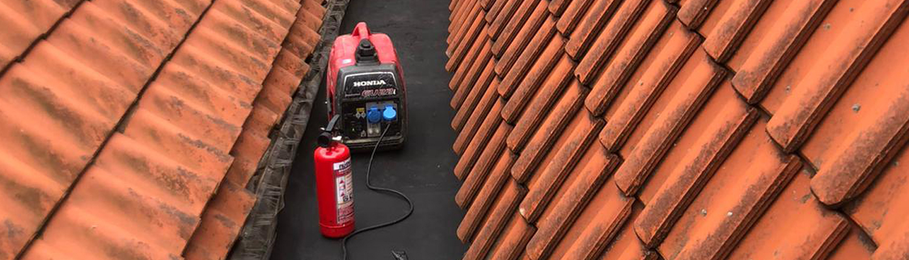
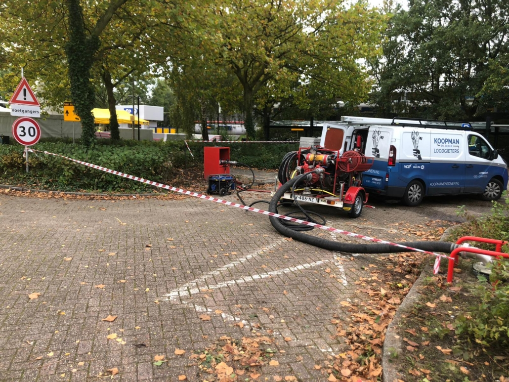
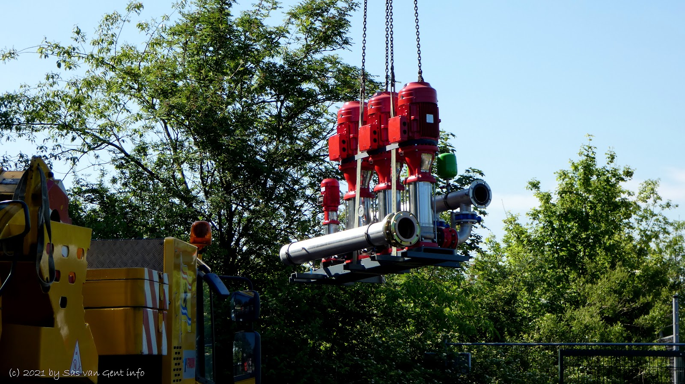
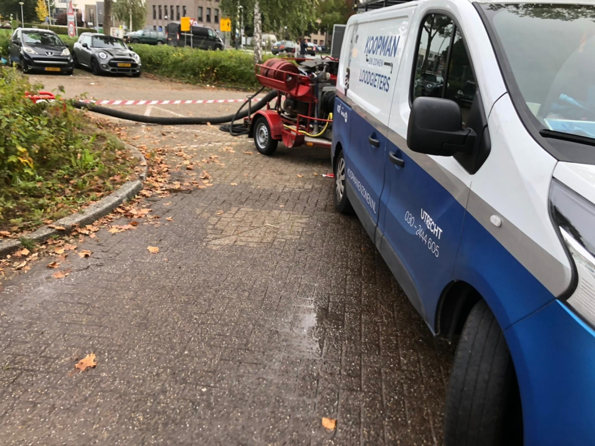
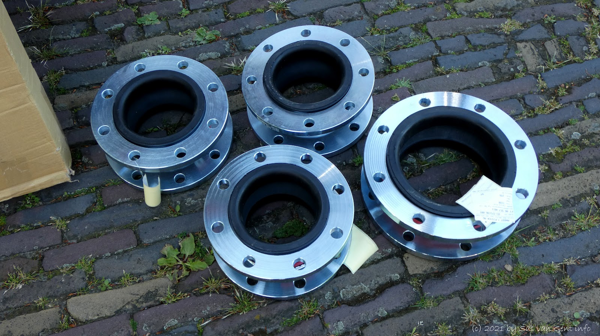
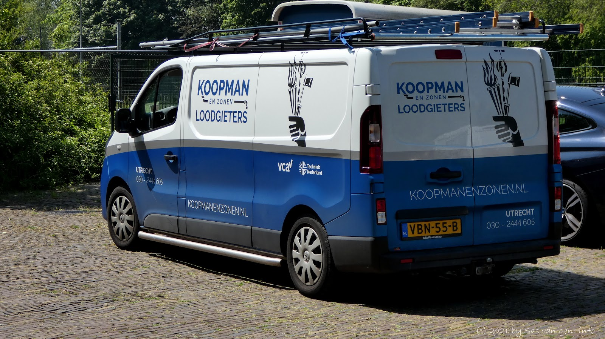
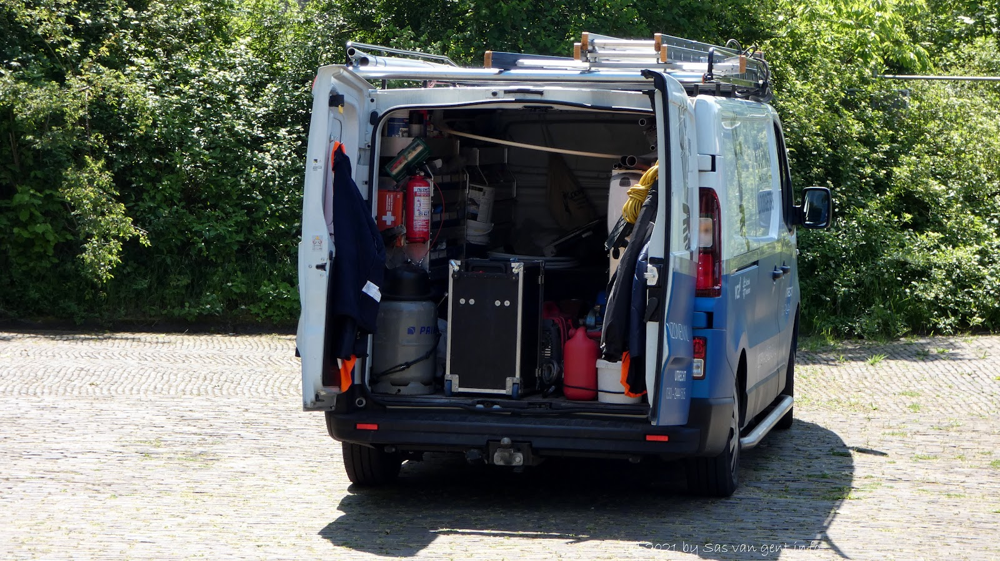

Dak
- Dakwerken onderhouden en renoveren
- Nieuwe dakbedekking aanbrengen
- Lekkages aan het dak verhelpen

Installatietechniek in Utrecht, sinds 1968
Droge blusleidingen, lekdetectie, riolering, waterleiding, dakwerk en sanitair. Voor ProRail, NS, aannemers, gemeenten en winkelketens. Met eigen materieel en korte lijntjes, van monteur tot directie.

Storing of lekkage? Onze storingsdienst is 24 uur per dag, 7 dagen per week bereikbaar, met gekwalificeerde monteurs.
030 244 4605Wij zijn niet in één hokje te plaatsen. Van gas- en waterleidingen tot riolering en droge blusleidingen: we ontwerpen, leggen aan, inspecteren en onderhouden. En we adviseren over energiebesparende, duurzame maatregelen.



Het monteren en leggen van droge blusinstallaties doen we sinds 1968. We leggen nieuwe leidingen aan in HDPE of staal, onderhouden bestaande systemen en persen ze af met onze eigen afperspomp. U krijgt er een afpersrapport bij.
Is er een lek? Dat sporen we op met geluidsgolven, zodat er veel minder gegraven hoeft te worden.

Jaar
Weet u dat er iets lekt, maar niet waar? Wij vinden het lek met gespecialiseerde apparatuur. Zo maakt u geen kosten voor onnodig sloop- en herstelwerk.
Ultrasound hoort de turbulentie van gas of lucht dat door een lek ontsnapt. Hoe dichterbij, hoe sterker het signaal. Dat werkt voor druk, vacuüm, perslucht en elk type gas, ook in luide fabrieksomgevingen.
Met lange afstand detectie vinden we lekken al op 15 meter, zonder lift of ladder. Bij perslucht-audits rapporteren we per lek de geschatte jaarlijkse kosten en de CO2-reductie.
We vullen de leiding met een veilig, niet giftig mengsel van 5% waterstof en 95% stikstof. Waterstof is het lichtste gas en sijpelt door de kleinste openingen, waar onze Sensistor-lekzoeker het oppikt.
Zo vinden we lekkages vanaf 1×10-7 mbar l/s (0,5 ppm), en de meter reageert niet op andere gassen.
Al meer dan 50 jaar werken we voor gerenommeerde opdrachtgevers. Flexibel, met snel en juist advies en een deskundige uitvoering.

Sas van Gent, Tinggi Towers, West, Fletiomare, het vervangen van drainage in Breda en de ABC-straat in Utrecht.

Elke dag is anders: storingen oplossen, dakwerk, blusinstallaties, utiliteitsbouw en rail infra. We zijn een jong en enthousiast team met korte lijntjes. Veiligheid staat bij ons boven alles.
We zoeken een loodgieter met ervaring, rijbewijs B en een afgeronde opleiding in de installatietechniek. Je krijgt 25 vakantiedagen en 13 adv-dagen, een marktconform salaris, reiskostenvergoeding en vergoeding voor overuren, nacht en weekend. Nacht- en weekenddiensten plannen we in overleg.
Stuur je cvWij zijn 24 uur per dag, 7 dagen per week bereikbaar.